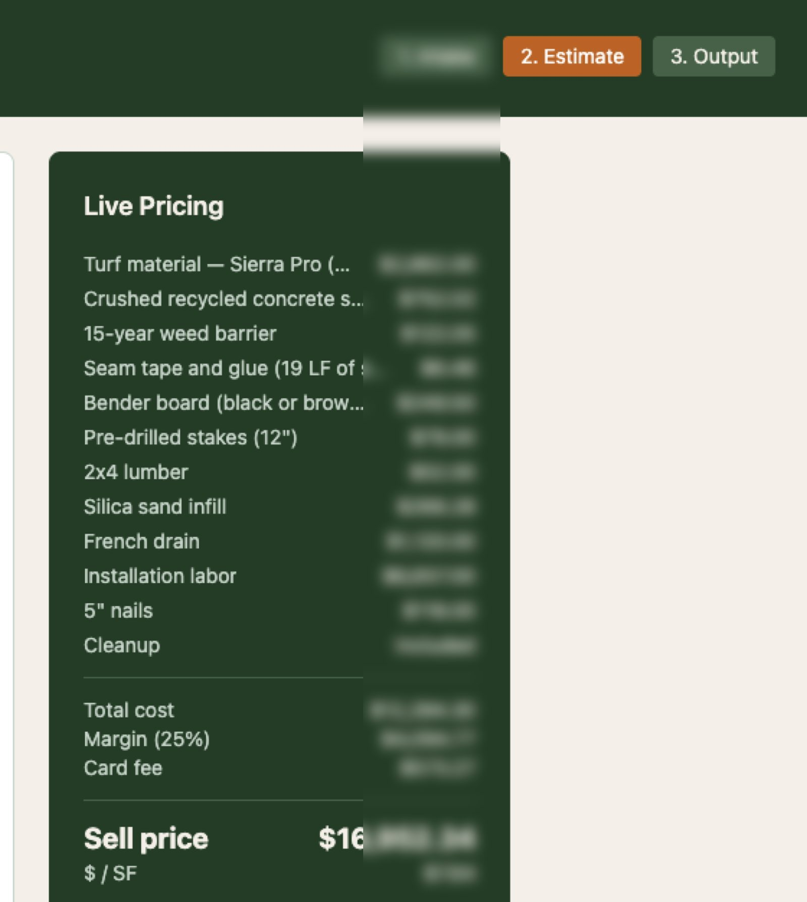
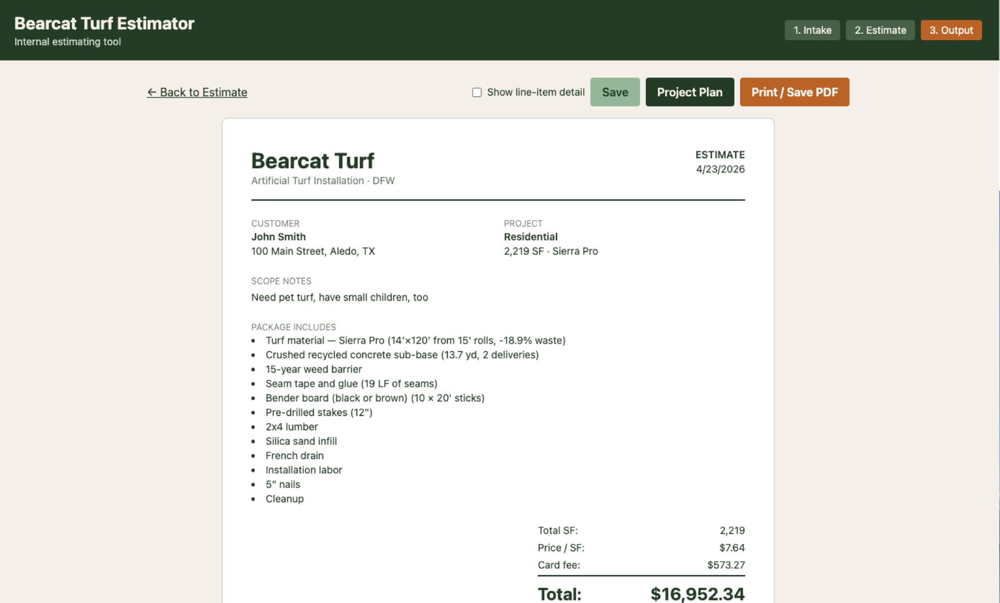
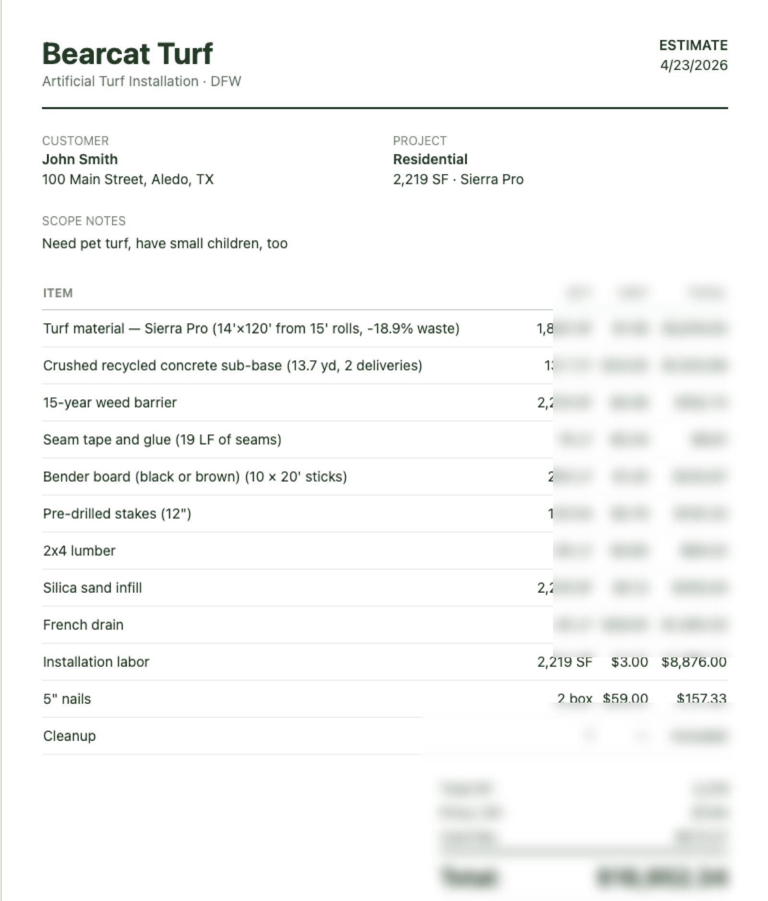

Bearcat Estimator
An AI-augmented internal bid engine calibrated against real P&L — AI-parsed PDF measurements, a margin-protected calculation engine, and bilingual crew plans generated in 15 seconds.

A bidding process quietly leaking margin.
Bearcat Turf installs artificial turf for residential, commercial, and sports projects across the DFW metro. The bidding process was a daily friction point:
- Estimates lived in spreadsheets — and the formulas hadn't been recalibrated against real costs in over a year.
- Material prices drifted constantly. TurfHub raised nail prices $55 → $59 in three months. The spreadsheet didn't catch it.
- iPhone measurements got re-typed. The crew used CamToPlan in the field, then someone manually re-entered every dimension into the bid sheet.
- Margin reality didn't match margin theory. A review of 24 closed jobs showed an actual gross margin of 27% against a target of 45% — a ~$8,700 annual leak hidden inside scope items the spreadsheet didn't capture.
- Crew handoff was English-only. Plans for the install crew — most of whom work in Spanish — were translated ad-hoc, often in the truck on the way to the job.
The owner needed a single tool that could turn a customer call, a measurement PDF, and a turf selection into an accurate bid in minutes — and then turn that bid into a Spanish-language playbook for the crew leader.
Everything that changes weekly lives in editable files — not code.
We built Bearcat Estimator — a focused internal web app that runs on the owner's laptop and any mobile device, with a calculation engine calibrated to the company's real P&L.
- React + Vite + Tailwind — fast, mobile-friendly, zero-build dev loop.
- Node.js + Express — lightweight API, runs anywhere.
- Anthropic Claude API (Sonnet 4.5) — PDF parsing + bilingual translation in one provider.
- Editable JSON files — owner can update prices in 30 seconds, no developer needed.
New turf product? Edit one line. Nail prices went up? Edit one line. The owner is the one updating the data, the way it should be.
Four features that pulled a full half-day back every week.
100% of manual re-entry eliminated.
Crew uploads the CamToPlan PDF from the field. Claude parses it, extracts dimensions, square footage, zone labels, scope notes, and obstructions — and auto-fills the bid form with confidence indicators.
~10 minutes saved per bid × dozens of bids per week = a full half-day reclaimed.Hidden margin recovered.
Roll-width optimizer with irregular-shape detection, min-day labor floor, $8/SF DFW market guardrail, live YTD-margin reference next to the slider. Caught one bid over-ordering 3,449 SF of turf — a $5,475 single-job correction.
Closed the gap between target margin (45%) and realized margin (27%). $50k+ recoverable on $290k revenue.Spanish playbook in 15 seconds.
One click generates a complete project walkthrough in English and Spanish, side by side — regional Spanish dialect of US construction crews. Materials, tools, phase-by-phase tasks, warnings, embedded PDF preview. Pricing stripped before the AI sees it.
Crew leaders arrive on-site aligned on materials and sequence. Crew never sees money.Three-tier pricing with one click.
Flip between Commercial (22%) / Good (25%) / Better (30%) / Best (35%) margin presets with a single click, sell price recalculating live.
Same bid, three pricing strategies, instant comparison. No retyping, no duplicate spreadsheets.Small surface area, big operational leverage.
- One provider, two AI workloads. Anthropic Claude for both parsing and translation — PDFs stream in as base64, structured JSON streams back. ~$0.02 per parse. Under $5/month at this client's volume.
- Pure-function calculation engine. All pricing math in one isolated module with no I/O — easy to test, audit, swap. Every line item produces an explainable cost breakdown.
- Editable JSON over hardcoded constants. Product catalog, component costs, settings, even the company's YTD margin benchmark — all in two JSON files. Owner updates pricing without touching code or redeploying.
- Stateless API + local persistence. Estimates save as individual JSON files. No database, no migrations, no backups to manage. Ready to migrate to Postgres or sync to QuickBooks when the business needs it.
- Designed for incremental upgrades. QuickBooks integration, Twilio SMS to the crew leader, deal status tracking — all scoped, none required for v1.
Spreadsheet workflow → AI-augmented bid system.
The owner drops a measurement PDF in, picks a turf product, and gets a defensible, margin-protected estimate — then a one-click bilingual project plan for the crew. The estimator is internal-facing, but the impact is customer-facing: faster turnaround, fewer re-bids, cleaner job execution, and a margin trajectory that finally matches the target.
Screenshots.
The project in the wild — UI from the live product.



Got a spreadsheet running your business?
Spreadsheets don't catch drift. AI-augmented tools do. Tell us what yours is doing and we'll scope what it would take to replace it with something calibrated to your real numbers.
Talk About Your Process